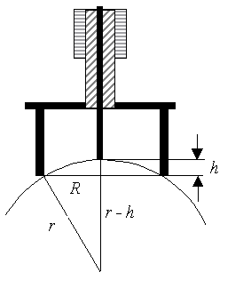
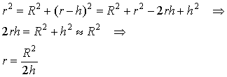
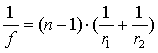

Ved hjælp af et sfærometer bestemmes en linsens krumningsradius og dermed dens brændvidde.
Et sfærometer er egentlig en mikrometerskrue på 3 ben. Først anbringes den på en plan glasplade og skruen drejes til den netop rører glaspladen, når alle 3 ben står på glasset. Herefter aflæses skruens nulpunkt. Indstillingen kan foretages flere gange og middeltallet beregnes. Læg mærke til om nulstillingen er positiv eller negativ.
Så anbringes sfærometret på linsens kugleflade, og skruen skrues fra hævet stilling ned til kuglefladen. Indstillingen aflæses. Mål på begge sider af linsen.

Opstillingen er forsøgt tegnet herover. Sfærometret har 3 ben, det ene ses ikke på figuren. De 3 bens røringspunkter ligger på en cirkel med radius R. Man kan måle afstanden mellem benene med en skydelære og udregne R. Man kan også måle fra et af benene til midterbenet eller man kan lade benene afsætte mærker på et stykke papir.
Vha. Pythagoras fås:

I udledningen er h2 smidt væk fordi h er en lille størrelse i forhold til r, og så er h2 jo en endnu mindre størrelse i forhold til r2!
Når krumningsradius er beregnet, kan brændvidden beregnes vha. formlen.

Når brændvidden er bestemt, kan man også beregne linses dioptri.
Bemærk, at sfærometret egner sig bedste til tykke linser, idet usikkerheden på h bliver for stor i forhold til h ved tynde linser.
Mål eventuelt også linsens brændvidde optisk.